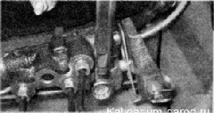
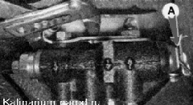

|
Необходимость в регулировке регулятора давления возникает после его замены, а также после замены пружин задней подвески или при неправильной работе тормозных механизмов задних колес.
Для выполнения работы потребуются помощник, а также:
— смотровая канава или эстакада;
— сверло или отрезок проволоки диаметром 2 мм;
— ровный участок дороги, свободный от транспорта.
Регулировка
1. Устанавливаем ненагруженный автомобиль на смотровую канаву или эстакаду.
2. Несколько раз нажимаем на заднюю часть автомобиля для самоустановки подвески.
3. Используя отрезок проволоки или сверло диаметром 2 мм в качестве щупа, измеряем зазор «А» между пластиной и рычагом (см. ниже фото п. 6), который должен составлять 2,0—2,1 мм. Если величина зазора не соответствует требуемому размеру, регулируем привод регулятора.
4. Накидным ключом на 13 мм ослабляем затяжку болта переднего крепления регулятора давления к кронштейну.

5. Большими раздвижными пассатижами сдвигаем регулировочный кронштейн, выставляя зазор между пластиной и рычагом в 2 мм.
 |